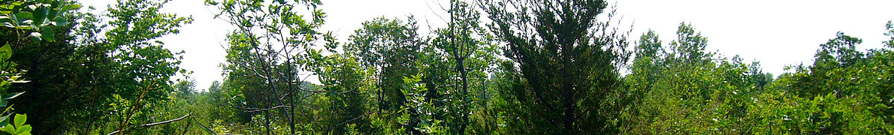

Dicionario de termos do Matagalense
É o básico - Expressão usada para definir algo normal ou algo do quatidiano
É FUT - Expressão usada para expremir ânimo sobre um determinado assunto
Kalaica - Palavra usada para definir algo indefenível mas sobre o qual se deseja falar
Robaliporco - Palavra usada para definir pessoas homossexuais ou com género indefinido
Zé Lopes - Expressão usada para definir medo sobre algo
Bacans - Palavra usada para definir algo bom ou elogiar garinas atraentes
Garina - Sinónimo de mulher ou moça
Bixo do Mato - Individuo cuja língua materna é o matagalense
EEHHH - Expressão usada por Bixos do Mato para demonstrar extrema felicidade ou entusiasmo
Urso - Nome usado para ofender Individuos
Oh - Interjeição usada para chamar individuos
Ou - Artigo usado para iniciar conversas
Deixa de ser maluco - Expressão usada por Bixos do Mato para informar individuos da sua tolice
Javardice - Palavra usada para definir um momento de caos
Sou mais inteligente que o Einstein - Expressão usada por Bixos do Mato para assentar dominância
És um cepo - Expressão usada por Bixos do Mato para realçar a burrice de outros
É Bobble - Expressão usada por Bixos do Mato para iniciar momentos de diversão
É Bobble - Expressão usada por Bixos do Mato para iniciar momentos de diversão
Por Jaricó, WhiteTiger2811, BigFrog e Rato